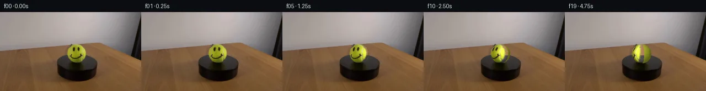

![首帧]()

Round 00
2026-11-05T09:26:12.089873+00:00像素候选变化代码 +177/−0inspection 更新
pixels fb2de6fa2ec9a510 · code 0de4342b967ec760
查看本轮 generate.py 真实 diff
--- previous/generate.py +++ current/generate.py @@ -0,0 +1,177 @@ +#!/usr/bin/env python3 +"""Generate the 20-frame PixelWorld continuation from first_frame.png. + +The animation is made only with local deterministic pixel operations. The +tennis ball is treated as an orthographically projected sphere. Its source +pixels are lifted to the sphere, rotated about the vertical axis, and projected +back into the same locked silhouette. +""" + +from pathlib import Path + +import cv2 +import numpy as np +from PIL import Image, ImageDraw + +from artifact_io import save + + +ROOT = Path(__file__).resolve().parent +W, H = 256, 144 +N_FRAMES = 20 + +# Measurements taken from the supplied first frame. +CX, CY = 139.25, 75.75 +RX, RY = 17.45, 17.65 +DEGREES_PER_FRAME = 4.0 + + +def smoothstep(edge0, edge1, x): + u = np.clip((x - edge0) / (edge1 - edge0), 0.0, 1.0) + return u * u * (3.0 - 2.0 * u) + + +def illumination(nx, ny, nz): + """Soft, fixed upper-left/front screen-space illumination.""" + light = np.array([-0.40, -0.49, 0.775], dtype=np.float32) + light /= np.linalg.norm(light) + ndotl = np.maximum(0.0, nx * light[0] + ny * light[1] + nz * light[2]) + # Wide diffuse fill matches the softly lit reference better than a hard + # Lambert falloff. A tiny frontal component keeps the limb from clipping. + return 0.52 + 0.43 * ndotl + 0.05 * np.maximum(0.0, nz) + + +def build_clean_felt(source, nx, ny, nz, inside): + """Estimate clean felt albedo for the narrow newly revealed longitude.""" + hsv = cv2.cvtColor(source.astype(np.uint8), cv2.COLOR_RGB2HSV) + shade = illumination(nx, ny, nz) + clean = inside & (hsv[..., 0] >= 23) & (hsv[..., 0] <= 40) + clean &= (hsv[..., 1] >= 85) & (hsv[..., 2] >= 75) + # Avoid the fuzzy silhouette and use robust statistics to reject ink/seam. + clean &= (nx * nx + ny * ny < 0.76) + samples = source[clean].astype(np.float32) / shade[clean, None] + # Upper quantile avoids contamination by the black smile while remaining + # grounded in the actual ball pixels. + felt = np.percentile(samples, 62, axis=0) + return np.clip(felt, 0, 255) + + +def render_ball(source, frame_index, grids): + """Return one locked-frame image with only the spherical surface advanced.""" + xx, yy, nx, ny, nz, radius2, inside = grids + if frame_index == 0: + return source.copy() + + theta = np.deg2rad(DEGREES_PER_FRAME * frame_index) + c, s = np.cos(theta), np.sin(theta) + + # Inverse material lookup. Clockwise rotation as seen from above moves the + # initially front-facing smile toward screen-left. + material_x = nx * c + nz * s + material_z = -nx * s + nz * c + map_x = (CX + RX * material_x).astype(np.float32) + map_y = (CY + RY * ny).astype(np.float32) + + warped = cv2.remap( + source.astype(np.float32), + map_x, + map_y, + interpolation=cv2.INTER_CUBIC, + borderMode=cv2.BORDER_REFLECT_101, + ) + + # Keep lighting stationary in the room while surface albedo moves. The + # bounded correction prevents ink strokes from becoming unnaturally bright. + src_nz = np.sqrt(np.maximum(0.0, 1.0 - material_x * material_x - ny * ny)) + target_shade = illumination(nx, ny, nz) + source_shade = illumination(material_x, ny, src_nz) … diff truncated; 90 more lines …